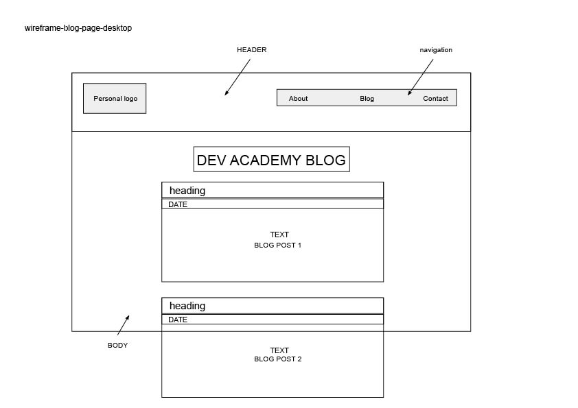
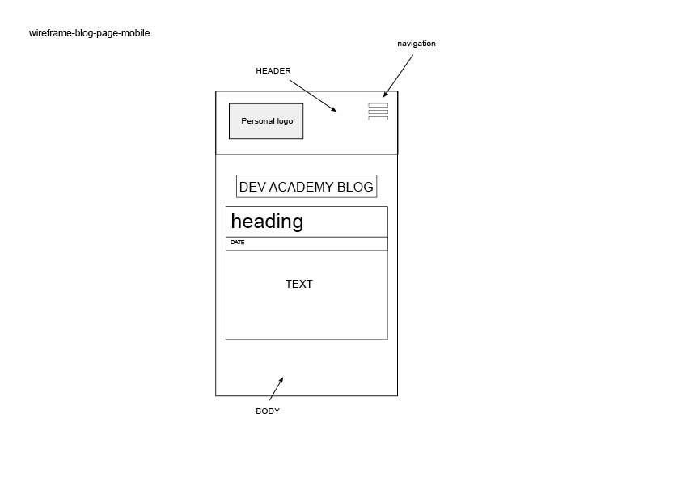
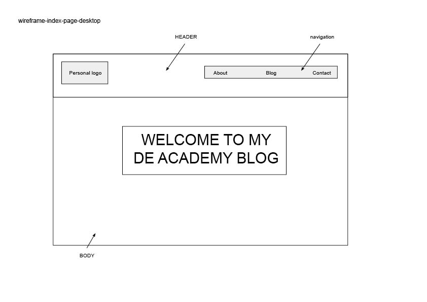
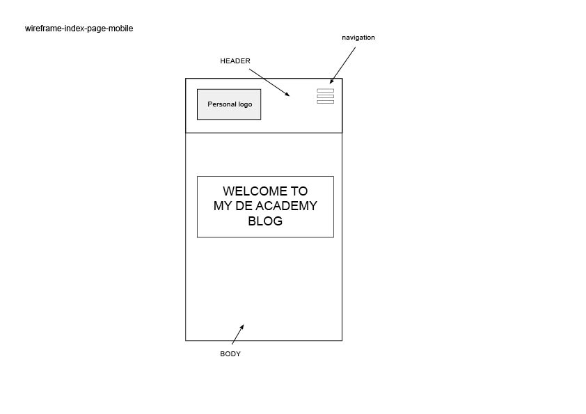

Sunday 20th December, 2015
Responsive web design aims to make the website look its best when viewed on any devices by making grids and image fluid so they respond by the screen is resized. Responsiveness is important because more and more people are accessing the internet with multiple devices and as more people access the internet using small devices like mobile phones, it's important to make websites that adapt to these different screen sizes.
Mobile first is the approach of building websites which takes mobile devices in mind from the very start. It's much easier to turn a mobile design into a desktop design from the start because a mobile layout is much simpler and doesn't need all the complex elements that are on a desktop. Also mobile platforms are become more dominant so it's very important to pay attention to the user experience for mobile devices, then move up to desktop.
A framework is a standardized set of rules and practices for solving common problems. Frameworks help to common structures to web developers don't have to redo it from scratch and can reuse the code. The advantages to frameworks include; speeding up start process, clean and tidy code, learn good practices, easy to maintain if working with other collaborators. The disadvantages are there can be a lot of unused code which can reduce performance and you don't learn to do stuff yourself. Some examples of frameworks are skeletion and bootstrap.
A wireframe is a visual mockup or representation of a website using only simple shapes. Wireframes don't have any color or design elements. They are used to communicate informational hierarchy, structure and content flow of a website or mobile app.
   Getting the layout to be fluid and responsive because I have never used a framework like skeleton before so I had to do a bit of research and spend time reading the documentation before I was comfortable adding content to it.